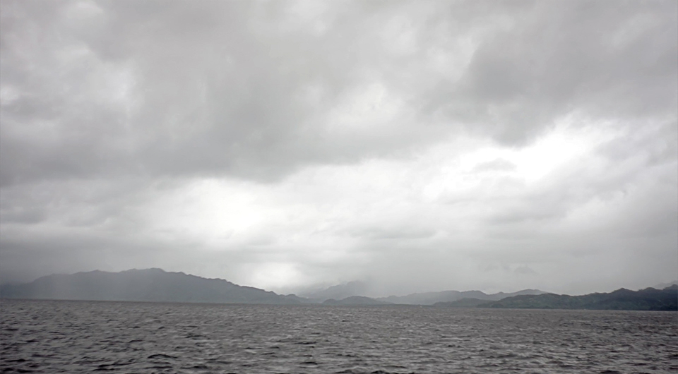
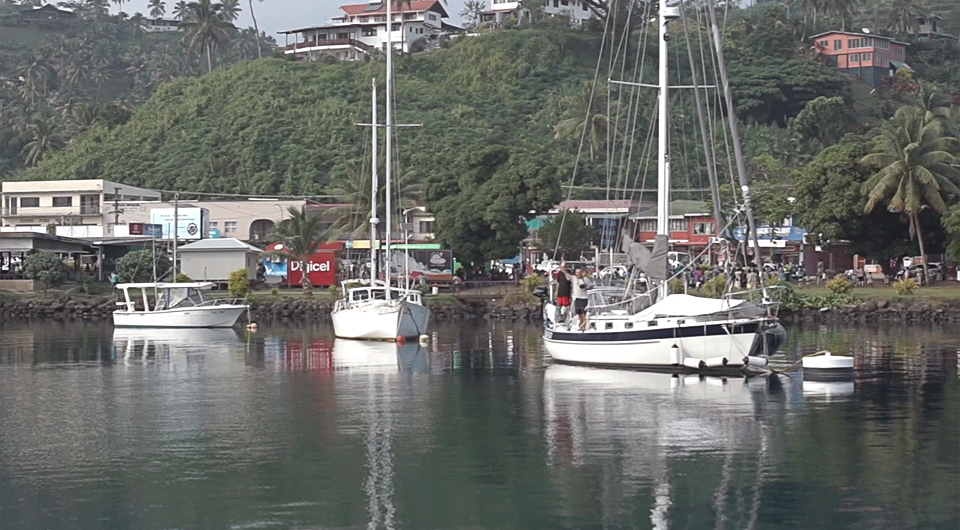
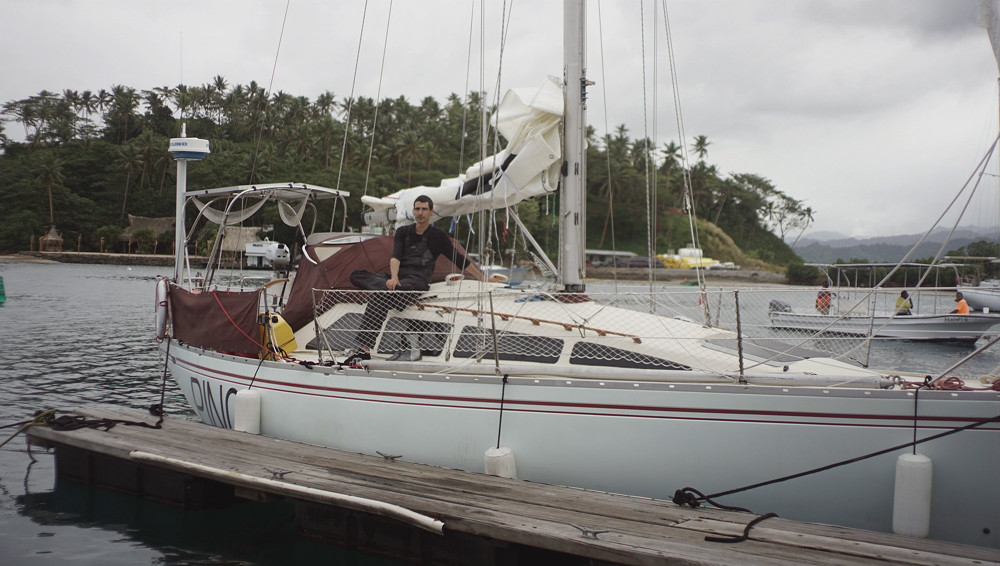
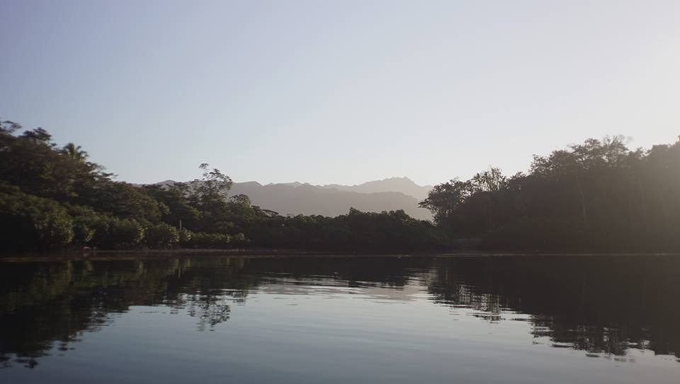

Captain, what is this?
Checking into savusavu in fiji

After 15 days on the water, you can imagine how eager we were to get into port. It was the 27th of June, we left on the 12th from Opua. We hove-to for the night, waiting for sunrise before entering Savusavu bay. After repeated mistakes, we learned that entering a strange harbour in the dark is most unwise. There is no point in arriving early, considering yachts cannot anchor in Fiji waters before checking in, and check-in is only possible after 8am.
At dawn, we pointed towards Vanua Levu and started sailing again, the wind at our backs. I went below to make some coffee, both of us needed a boost. Devine was in the cockpit, keeping a wary eye on a large storm cloud ahead. The wind increased as we neared it, but it did not trouble us long. We made our way inside the reef, which offered some protection from the building swells. Now closer to land, we could see rows of hills ahead, and caught the perfume of greenery with it. After that, came a sure sign of civilization: buildings, low, with green and red roofs. As we got nearer, came an even more obvious marker of civilization: cars, and small power boats. We'd arrived.
We neared the entrance to Nakama creek around 9am, and radio'ed the authorities on channel 16.
- "Savusavu port authority, Savusavu port authority, this is sailing vessel Pino, over."
This, I repeated 3 times, no answer. We slowed down, awaiting a reply. The commercial wharf lay ahead, we could see boats on moorings, some abandonned, others belonging to people we'd seen or met accross the pacific.
- "Sailing vessel Pino, this is Coprashed marina. There is no port authority in Savusavu, how can I help you today?"
- "We're looking to check in," I said.
- "Where did you sail from?"
- "Opua, New Zealand."
- "Did you send your advance arrival notice?"
- "I did send it yes, and received confirmation for it too."
We'd heard they were all too severe about the advance arrival notice, which was about 10 pages too long. I'd sent it to the proper people by email, although half of the messages bounced back and other cruisers reported the same thing happening. With the document being so large, it's no wonder their inboxes are always full. I even tried again while underway, no luck. No matter, I'd received a reply from the custom office, at least one of the messages made it.
- "Continue into the harbour, past the wharf, and over to our building which stands on your starboard side. It is a white building. Once you arrive closer hail us again."
We moved deeper into the creek, looking for a white building on the shore. Once we were past the wharf I called them again, they mentioned a dock and instructed us to tie to it. I didn't expect to have to dock the boat, from what we'd read online we didn't have to do that! Things do change from year to year, and from boat to boat. The fenders weren't ready, and neither were the docking lines. I ran around the boat, gathering everything, all the while trying to figure out where that damned dock was. We spotted one ahead then, with a ramp, but with no building near it.
- "Do you think that's it?"
- "I don't know – looks shallow, plus there's people with dive suits on it. It's probably for the locals."
We glimpsed another free dock further ahead, a finger, part of the marina, it looked like a regular slip. Getting there meant moving inbetween a few boats, channel markers and moorings – the floating dock seemed a better option in comparison. Then, we saw two persons on the marina finger, waving us over. This is where we'd have to dock. Docking is always a nerve-wrecking experience, we didn't have current to contend with but perpendicular to the dock, was a large power boat, with nothing between it and our bow. If we came in too fast, we'd bump into it for sure – bumping into still objects is always embarassing. I was still attaching fenders at this point, while Devine manoeuvered Pino around various obstacles.
- "Sailing vessel Pino, this is Coprashed marina."
They couldn't have picked a worse time to hail us, the dock lay ahead and two of the lines weren't yet set up. I ran inside, sweating from all the running, it was also 26C out, and I was in full foul-weather gear. Couldn't they see that we were right there and that they could ask us questions later?
- "This is Pino."
I said to them on the radio, trying to peel part of my foul weather gear off because I was cooking inside it.
- "Where was your last port again?"
- "Opua, New Zealand," I said.
I shut off the VHF off, determined to not answer if they asked anything else. I darted back outside. We were right near the quarantine dock, I set up the last two dock lines, and threw the ends to the marina staff. We slowed to a stop, our bow drawing all too near to the boat ahead. I noticed then, the name on its side, a New Zealand boat, we'd seen them power past us on AIS on the way up here.
All went well in the end, Pino was at the dock and we could relax. The marina staff were friendly, one of the line handlers shook our hand.
- "Bula! Bula! Welcome to Savusavu!"
- "Bula!" we repeated.
We wished we'd bothered to learn some Fijian before arriving here. Bula could mean welcome, or hello, we hoped for the latter, us repeating "Welcome!" would be awkward indeed. We waited for the proper authorities to visit, and noticed then that the new zealand power boat had bands of yellow with 'crime scene' written all over it.
- "Is that what happens when they find undeclared veggies aboard?"
We wondered, all the while becoming paranoid about the bit of ginger and pumpkin we'd hidden away. We saw police walking the docks, everyone we'd met so far was all smiles, but these guys looked serious. They wandered off for a second, I stepped off Pino, moving a short distance away, to try and take a photo of Devine and the boat to show others we'd arrived. I took a photo, but a second after, Devine motioned for me to return, a marina attendant was walking towards us as if to say that we had to stay on the boat. With the stone-faced police walking about, it was best to heed their warning.
It was some time before the authorities came to see us. The first, in the long line of officials, was the health inspector. He was a friendly fellow, dressed in casual wear, a colorful blouse and sandals. He had us sign and fill papers – writing down Pino's info and our passport numbers is second nature now.
- "Is it just you two? Did anyone die aboard this vessel?"
- "Uh, yes and no."
Important not to get those mixed up.
- "Any animals? Insects?"
- "Do sea birds count?"
I did not say this aloud, but at sea, the thought of having a gannet friend always crossed my mind.
- "No animals, no."
Saying this, my mind screamed 'gannet friend' over and over again.
- The officer nodded. "Are you sick?"
- "No."
- "Are you sure?"
- "No. I mean, yes! Sure! So sure. We're so healthy."
I could see him writing this down now, Rekka and Devine: "so healthy". He then began to talk to us about the mosquitoe situation. While Fiji doesn't have it as bad as other places, there have been instances of dengue. Ah, dengue, we'd first heard of it while in Japan, there was an outbreak and no one could visit the parks. I didn't know what it was back then, just that it's something you didn't want to get. Since then, we came to be very familiar with dengue, Devine contracted it in Nuku Hiva. You can say we weren't keen on a repeat, dengue is no joke. The health officer wanted to make sure we understood that.
- "Fiji doesn't want you sick." Fair enough.
Then, we had a visit from the quarantine officer, an indian-fijian, who was very excited to hear that we didn't consume dairy or animals. He admitted to consumming some meat, and aspired to lessen it to none. We had a long conversation about this, and even showed him a book we had on cooking in India. We spoke about the consumption of meat, and he mentioned a lot of the health risks associated with it. Like in the west, people in Fiji too suffered because of it. I'd almost finished filling out papers, when two fijian women arrived with more. They were the customs and bio security officials. They asked to come inside. The boat was a mess, I went in and shoved everything we had in the v-berth to make room in the saloon. I also set up the table, since it appeared as though we had many more documents to fill – yay. The two women gave us the first wave of sheets to read and sign, and began to look through our lockers, asking us questions about our stores. One of them took our passports, and began to look through every page, matching the exit stamps with what we'd written on our advance arrival notice.
- "You came from Opua."
- "Yes."
- "Before this?"
- "Tonga."
- "Before this?"
- "Niue, cook islands, french polynesia, mexico, USA and then Canada."
She looked for the stamps in our passports.
- "Where is the mexico stamp?"
Mexico and US don't stamp Canadian passports on entry and exit, it's how it is, but it was hard to make her understand this. The other woman was opening every locker, pulling out bags and asking us questions about their contents.
- "Captain, what is this?"
- "Lots and lots of coffee."
- "Beans?"
- "Yes, it's better kept as beans."
Then the quarantine officer pushed another paper for us to sign, all while making a mess of our galley (our boat kitchen) and asking questions about where we'd been. It was a dizzying experience, having so many people aboard, with the table covered in pieces of writing: 'sign this, sign that!' This moment, was made even more chaotic, with them exchanging pleasantries (we hope) in Fijian. Devine and I smiled at one another, what a strange scene, sometimes they didn't even pay attention to us at all.
- "So, you left from Mexico when?" one of the women asked.
She was inspecting every inch of our passports and had noticed how the numbers on our passports followed each other, and decided that this was suspicious. It is odd, but it's what happens when you have new passports processed together.
- "Captain."
The other woman began, she was on her hands and knees, head under the sink. She pulled away, holding the end of a hose with a bottle of mexican dry salsa wedged into it.
- "What is this?"
In Rarotonga, we disconnected the water pressure hoses since we no longer had a pressure faucet. We didn't have any plugs around the boat to close them up, but what we did have, were many sample-sized bottles of mexican dry salsa, or Tajín. The bottle end was a perfect fit, and we'd since forgotten to replace them with something else.
Devine and I looked at each other, supressing a laugh, we never thought we'd ever have to justify this crappy fix to anyone. Now we had 3 Fijian officials onboard, all looking at the bottle of salsa en polvo, waiting for an explanation.
- "It's dry salsa, from Mexico."
They said nothing, and didn't ask any more about it, which was good considering there was little more we did want to say. I'm sure they've stumbled upon worse things, or it's possible that all foreign yachts stuff salsa bottles, or other oddities up their hoses.
We thought they'd only be looking through the galley cupboards and lockers, but they decided they needed to look through everything, and I do mean everything. I remembered then the pumpkin and ginger root we'd hidden, one lay under clothes in a bin, the other stuffed deep inside our dirty laundry bag. We hadn't mentioned we had these left-over, because we wanted to eat them – I care deeply about my rhizomes and squashes. I became paranoid, would they fine us for not declaring them? I could see it now, one of the women pulling a large pumpkin out of our laundry bag, eyes on us and asking, "Captain, what is this?".
They looked in our bilge, under the settee cushions, and in all the bags stacked up in the quarter berth too. All the while, getting nearer to the v-berth, where I had my illegal vegetables. They looked in the head, and at the plastic bags of medicines we'd inherited from Asma and Herbert from Maya. They didn't care about most of the medicines we had, but the woman did find a stack of sealed needles.
- "Captain, what is this?"
- "They're needles."
- "Why so many?"
I wished I could remember why Maya had this many so I could repeat and sound like I knew what I was talking about. I didn't know what to say, but no matter, the woman found some other item of interest: our tattoo needles.
- "It's for tattoos."
Then we showed them a plastic box with our tattoo machine and gear.
- "Do you like tattoos?" Devine asked.
The woman looked at Devine's neck, and at my arm.
- "No" she said, unimpressed.
The other official began telling me if I knew how to remove tattoos, as if to make sure I knew there were options in case I did change my mind about having them. This was a big contrast to the people in French Polynesia, who gave us a thumbs up as we walked past.
The officials spent a lot of time on Pino, they were a pleasant bunch but at this point in the day we were running on fumes. We'd slept 3 hours that night, this, plus the accumulated exhaustion from 15 days of sailing. They did leave eventually, and didn't bother checking out the v-berth. By then, we'd decided they cared little about our secret stash of veggies. We later found out that the reason they did such a thorough search, was because the owners of the boat that arrived before us, the one with the 'crime scene' tape, were in jail for arriving into the country with undeclared ammunition.
We made lunch, but could not sleep yet, we had fees to pay to the quarantine and health officers and had to go into town to get some money to do it. They told us where to find their respective offices, that Savusavu was a one-street town and that they'd be easy to find. They gave us general direction, we didn't take notes thinking we'd remember, severely overestimating the capabilities of our tired brains. We also moved our boat off the dock and onto a mooring, and pumped some air into Iggy the dinghy before going into town.
We were looking for a green building, but none we passed looked like a proper office. This was our first excursion into town, our first look at Fiji. The city, while small, was very animated and busy, there were people everywere. Everyone we passed waved at us, "Bula!" We returned their wave and greeting – by now, we knew bula meant hello. We passed by an area packed with windowless buses, with vendors outside trying to sell its passengers soft drinks and snacks. Wild dogs roamed the streets, we passed a green space with people, sitting while chatting and sharing food. We caught a glimpse of the digicel booth, we'd have to come here later to get some data for our phones. The fresh vegetable market was right next to the bus station, looking very much like the one in Tonga, but bigger, with stalls selling indian staples. We couldn't wait to get some paw paw and breadfruit! The town had many stores: lots of hardware shops selling more or less the same content, a hideously pink grocery store called Max value, a chinese bakery etc.

We arrived at the edge of town then, or the part of town where the street transitions from buildings to bush, and still no health or quarantine office in sight. We remembered them saying that the customs office was on the other side of town, where there were less buildings. This one, we figured, we couldn't miss. We found it straight away, picked up our passports, and asked for directions to the health and quarantine offices again. They assured us that if we kept walking the other way, that we'd find the green building.
Devine and I dragged our tired bodies back over there, and did find a green building. The quarantice office wasn't on the street, but at the back of it. The quarantine officer took a liking to us and we talked for a long while, but our bodies longed for a rest. We must have said goodbye 10 times before he agreed to let us go. He told us how to find the health office – hopefully this time, we wouldn't forget. We walked out, and about 5 minutes into our walk, we realized that we had contradicting information.
- "He said it's on the left and past a round-about," I said.
- "No, he said it's on the right close to the customs office"
I felt my skin getting warmer, I couldn't believe we'd forgotten again. Dead on our feet, Devine volunteered to return to ask the chatty man about the health office again.
We did eventually find it, but we did forget something again, they couldn't provide change, we had to pay the exact amount. This, they'd told us, although neither of us remembered – a feeling all too familiar at this point. We stood there, ready to drop, I considered faking a tear then too – that's how desperate I was. Our exhaustion must have been obvious to them, because he took pity on us. He went around the office, and asked other employees for change – what a guy, oh what a guy!
On the way out, we stopped by the Digicel booth to get some data. I would have preferred we'd go tomorrow, but Devine insisted on it. We took some amazing shots while becalmed on the ocean during our passage, and Devine wanted to put them online. We'd heard internet in Fiji was cheap, but we didn't expect to get 25G for 25$, this equates to 15$ cad. In Tonga, all we could get was 5G for 25$ (Tongan dollars). We couldn't believe it. The Digicel employees welcomed us to Savusavu, all the while staring at Devine's lip piercings like they weren't of this earth. We had a chat, and told them we came on a yacht, and right then all the employees turned to us.
- "Did you hear of the boat with weapons? Do you know what happened?"
The ammunition boat was the talk of the town! They asked us about it and we told them what we knew, amused by how fast news traveled here. We left the stall, data in hand, brains melting, but walked past the market – we'd made enough stops for today. Arriving back on the boat, we made some dinner, I can't remember what we ate because seconds after eating it we passed out.
We're here, and we can sleep for more than 3 hours at a time - oh how grand a feeling!
Watch this video of our time in Savusavu.